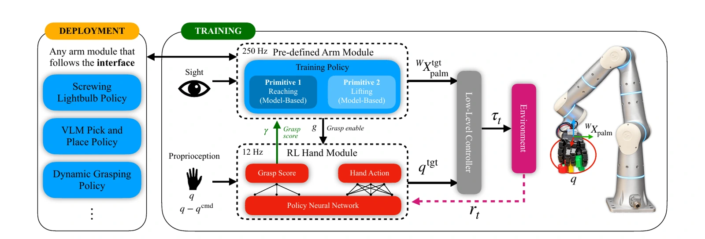
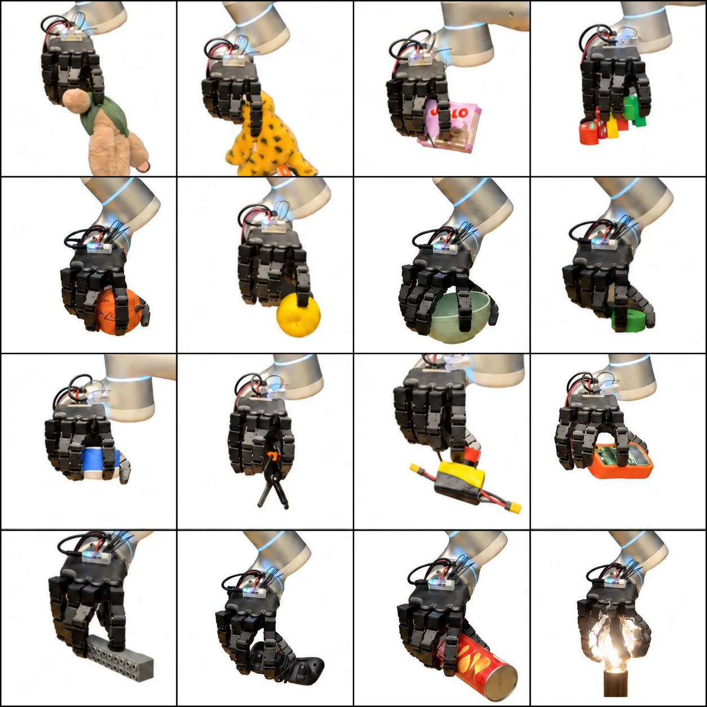
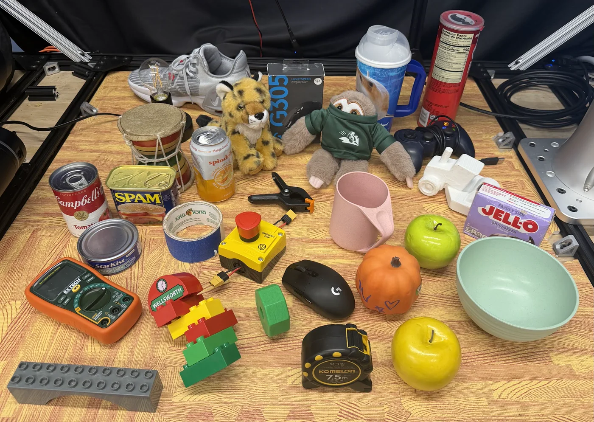

A hand-local policy grasps using proprioception alone, while a learned grasp score
coordinates independently designed arm controllers.
Abstract
In this work, we study whether a robotic hand using proprioception alone can grasp
diverse objects with no visual observation. We present a modular dexterous grasping
architecture that separates global arm motion from local contact control. An
independently controlled arm guides the hand toward the object, while a reinforcement
learning policy grasps and stabilizes it using only hand proprioceptive feedback. We
call this a blind grasp reflex: grasping without images, object poses, or
geometric observations.
A learned stable-grasp score determines when the object is securely held, allowing the
arm to begin post-grasp manipulation. This separation makes grasping a reusable
hand-level skill that can be combined with independently designed arm controllers for
various manipulation tasks. Experiments in simulation and on hardware demonstrate
robust blind grasping across diverse objects and seamless composition with a range of
arm controllers. Moreover, despite never observing contact geometry, the learned grasp
score closely aligns with an independent physics-based measure of grasp stability. The
resulting approach follows a simple principle: see to reach, feel to grasp.
Method
Our framework separates global arm motion from local grasp control. The arm module sends
desired palm poses and a grasp-or-release command. The learned hand module returns finger
targets and a scalar grasp score that tells the arm when to begin manipulation.

System overview. Global perception and task planning remain in the arm
module. The hand policy observes only a short history of joint positions and command
errors. A low-level velocity controller combines the arm and hand commands.
Interactive 3D Grasps
Explore recorded simulation rollouts from different viewpoints. The arm module guides the palm to the
initial object position, and when it is within range it gives the grasp enable command to the hand. Then the hand
policy begins grasping and when it reports a high enough grasp score the arm module lifts the palm.
Drag to orbit · Scroll to zoom
Loading 3D grasp…
Twelve geometrically diverse grasps were selected from the full YCB evaluation set,
spanning fruit, a ball, containers, tools, and household objects. Each recording is
disturbance-free and shows more than five seconds of continuous object hold. The rollouts
render directly in your browser; no live simulation server is required.
Results
The blind grasp reflex generalizes across object sets and responds robustly when the
object moves after execution begins.
Evaluation
Ours
End-to-end RL
YCB objects grasped (78 objects)
96%
98%
GraspXL objects grasped (3,028 objects)
95%
97%
Dynamic grasp success
92%
8%
Object-pose generalization
90%
15%
The learned grasp score achieves a mean within-episode Spearman correlation of
+0.77 with the Ferrari-Canny force-closure metric, even though the
deployed policy never observes the contacts used to compute it.

Blind grasping on hardware. The same frozen hand policy grasps objects
with different sizes, shapes, materials, and surface properties without observing their
geometry.
Demonstrations
The following videos show the learned grasp signal, transfer across robot configurations,
blind grasps behind occluders, reactive grasping, lightbulb screwing, and
language-conditioned manipulation. Every demonstration uses the same frozen hand policy.
Learned Grasp Score
Grasp score and force closure
A simulation rollout shown alongside the learned grasp score and the independent
Ferrari-Canny force-closure metric. Both signals rise as the grasp forms, fall after
an external disturbance, and recover during re-grasping.
Arm-Agnostic Transfer
The policy observes only the hand, so the same checkpoint can be reused across arm
kinematics and mounting configurations without retraining.
Four robot arms
The same hand policy grasps with a Flexiv Rizon 4, Franka Panda, UR5e, and Kinova
Gen3 in simulation.
Four mounting orientations
The policy remains effective with the arm mounted on the floor, side, wall, and
ceiling - configurations not encountered during training.
Blind Grasping Behind Occluders
We show that our method truly relies on feel rather than sight by asking a VLM to grasp
an object hidden behind an occluder.
Behind a cracker box
The hand searches behind the box and secures an object hidden from the camera.
Behind a blue cup
The robot reaches past the visible cup and grasps the occluded target behind it.
Behind a laptop
An open laptop fully blocks the target while the hand acquires it through contact.
Behind a soccer ball
The hand grasps a pair of soccer shoes while the ball obscures the contact region.
Behind a helmet
The robot retrieves a measuring tape hidden behind the helmet.
Behind a building-block box
The hand finds and lifts a hidden toy in a cluttered tabletop scene.
Reactive Grasping
Here, another arm controller uses SAM 2 to track objects in real time while the hand
runs the same frozen blind-grasping policy. State-of-the-art reinforcement-learning
grasping methods typically learn arm and hand control together, limiting the entire
system to behaviors seen during training. Our method separates the two, enabling
reliable grasping while the arm is controlled by any module—not only the reach-and-lift
controller used during training.
Moving Lego pick-and-place
Language-Conditioned Manipulation
A VLM-guided pick-and-place controller directs the arm while the hand runs the blind,
proprioception-only grasping policy. The arm approaches the pickup position supplied by
the VLM and, once within range, instructs the hand to begin grasping. Only after the hand
returns a sufficiently high grasp score does the arm proceed to the placement position,
while the hand maintains the grasp throughout the motion. The arm then instructs the
hand to release, placing the object. These demonstrations show the hand policy grasping
objects at heights never encountered during training and producing both power and pinch
grasps across a diverse set of objects.
Animals and packages
Sequential commands place a sloth toy, a cheetah toy, and a gelatin box into the
blue bin.
Electronics and tools
The system places tape in a bin, a yellow switch in a helmet, and an orange voltage
meter on a white box.
Fruit sorting
Natural-language instructions place a pumpkin on a plate, a yellow apple in the
green bowl, and a green apple in the blue bowl.
Lightbulb Screwing
The arm begins rotating only after the hand's learned grasp score indicates that the
lightbulb is secure. The hand remains active during sustained wrist motion, then
releases between turns so the screwing sequence can repeat.
Grasp-conditioned manipulation
Real-World Objects
We qualitatively evaluate the system on 29 real-world objects spanning toys, tools,
containers, deformable items, and irregular shapes. The same policy successfully grasps
every object shown below.

The 29-object hardware evaluation set.
Small, rigid, and block-like objects
Blind grasps across compact toys, tools, and angular objects with varied contact
geometry.
Round and cylindrical objects
The same hand policy stabilizes spherical and cylindrical objects spanning several
sizes and surface properties.
Containers and packages
Hardware trials with bottles, cartons, and packaged goods demonstrate reliable
contact-driven grasp acquisition.
Soft and irregular objects
The hand adapts online to deformable and asymmetric objects without observing their
shape or contact geometry.